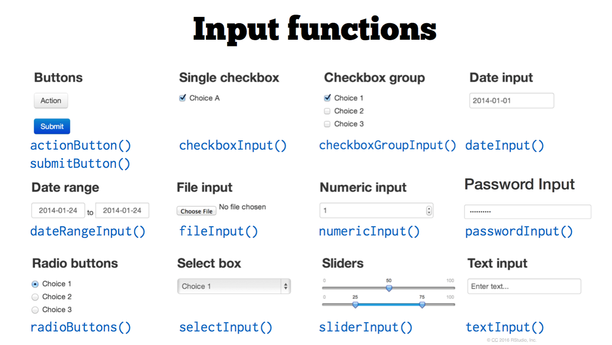
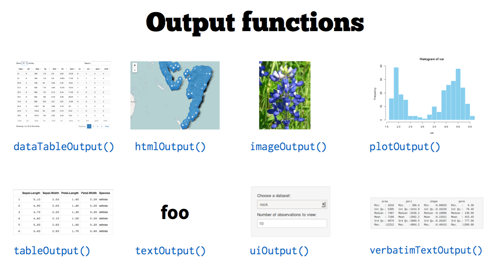

ARA: Shiny Learning Session I
Introduction to Shiny
Brian Carter
Feburary 3rd, 2017
Agenda
Agenda
What is Shiny?
Examples.
Next steps and resources.
These learning materials
These slides were created in rmarkdown using reveal.js. Read more about it here.
You can access these slides on our server at
http://apsld0058:3838/r-shiny-20-Jan-17/ara-shiny-presentation.html#/.
- All code for examples and creating these slides are on Codehub:
https://codehub.optum.com/payment-integrity-analytics/shiny-server/tree/master.
Introduction
Motivation
R is a powerful tool for data analysis
State of the art statistical power.
Excellent for visualization (ggplot2).
Large community of users.
but…
Personal experience, not a shared one.
Output is usually in static formats.
DS projects go to PowerPoint to die.
- Modern visualization is interactive and browser-based.
Data Products
Data product is the production output from a statistical analysis.
Automate complex analysis tasks.
Expand the utility of a data information model, algorithm or inference.
Roger Peng, Developing Data Products, Coursera (see links)
The analysis is complete and conclusions reached.
Build an artifact for other people to engage with your conclusions.
- Not the end, may lead to further work - it lives…
What is Shiny?
A web application framework for R.
Modern web UI with attractive defaults.
- Requires no knowledge of HTML, JavaScript or CSS
- but with a little knowledge is completely customizable.
Integrates with existing JavaScript libraries (D3, Leaflet, etc.).
Reactive programming model.
Use R packages in real time with given data and inputs.
but ….
Not designed to serve many users.
Not going to build a web-store.
Examples
Learning
Five Examples
- Intro to Shiny Reactive
Modelâviewâcontroller (MVC) vs Reative paradaigms.
Angular.js (Google) vs. React.js (Facebook).
Shiny Reactive predates React.js but same paradaigmInput Widgets
UI Layouts
Plot Example (ggplot)
Multiple Ways of Creating a Shiny App
Recap
(1) Reactive
ui <- shinyUI(fluidPage(
textInput(inputId = "identity",
label = "Who are you?",
value = "World"),
textOutput("helloAns")
))
server <- shinyServer(function(input, output) {
#Most caputre input in a reactive function()
myAnswer <- reactive(paste("Hello", input$identity))
#Note call the function myAnswer()
output$helloAns <- renderText({ myAnswer() })
})- all renderXXX can accept reactive values()
- reactive() always listening funciton…
output$helloAns <- renderText({paste("Hello", input$identity)})(2) Input Widgets
ui <- shinyUI(fluidPage(
extInput("identity", "Who are you?", value = "World"),
selectInput("language","What language would you like?",
choices = c("English", "Irish", "Hindi")),
textOutput("helloAns")
))
server <- shinyServer(function(input, output) {
lookup <- data.frame(
language = c("English", "Irish", "Hindi"),
salutation = c("Hi", "Dia Duit", "Namaste"))
output$helloAns <- renderText({
paste(lookup$salutation[lookup$language==input$language],
input$identity)
})
(3) Layouts
ui <- shinyUI(fluidPage(
sidebarLayout(
sidebarPanel(
checkboxInput("dummyBox2","Check and uncheck"),
sliderInput("dummySlider","Move the slider",
min = 0,max = 1,value = 0.5)
), #end of sidebarPanel
mainPanel(
h1("Not a lot going on here")
) #end of mainPainel
)#end of sidebarLayout
)#end of fluidPage
)#end of UI
server <- shinyServer(function(input, output) {})Recap
UI Layout
1 - UI Inputs
2 - Rendering Functions
3 - UI Outputs
(4) Plot Example
ui <- shinyUI(fluidPage(
# Application title.
titlePanel("Finally a plot"),
sidebarLayout(
sidebarPanel(
selectInput("col_i", "Choose numeric column to graph:",
choices = c(colnames(mtcars))),
sliderInput("numBins_i","Choose number of bins",
min = 5,max = 30,value = 10),
numericInput("numRows_i", "Number of rows to view:", 10)
),#End sidebarPanel
mainPanel(
h4("Histogram"),
plotOutput("mHist_o"),
h4("Observations"),
tableOutput("mRows_o")
)# End main panel
)#end sidebarLayout
)#end fluidPage
)#end UI
server <- shinyServer(function(input, output) {
# Show the first "n" observations
output$mRows_o <- renderTable({
head(mtcars)
})
# Create histogram
output$mHist_o = renderPlot({
ggplot(mtcars, aes(x=qsec)) + geom_histogram()
})
})(5) Multiple ways of creating shiny apps
Have created ui and server functions() in file and called each function from file.
shinyApp(ui = ui, server = server)- Can also created two file ui.R and server.R save in a directory myApp and from command line of parent directory run. (example-5a)
library(shiny)
runApp("~/myApp")Further learning
- rmarkdown with a runtime:shiny (example-5b)
- shinydashboard() (example-5c)
- rmarkdown + shinydashboard = flexdashboard.rmd (example-5d)
Recap 2




Next Steps
Start Building
Enough knowledge to start creating apps. Give it a go. Break some stuff. Get confused. More than happy to help out.
More Learning Sessions?
Best way forward. (Intent of sessions)? More Sessions?
reactive - ladder of enlightenment (6 steps)
expanding with htmlwidgets
- brushing and linking!!!
layouts - shinydashboard, flexdashboard
deploying apps on our server using Shiny Server
- using RStudio project and packrat library
- ARA Shiny Server FAQ
Links
Coursera
Developing Data Products
DDP Videos
DDP github
RStudio
Tutorials
Cheatsheet
Articles Really Good
Example Apps
Show Me Shiny - lots of Examples
User Showcases from RStudio
Learn some simple stats
Videos/Talks
https://youtu.be/MrQVzz2POD4 - Joe Cheng, Key Package Author
https://youtu.be/HxeHNQojVc44 - Winston Chang, Key Package Author
Backup slides
Documentation
Deployment on Shiny Server
- Confluence page: http://wiki.optum.com/display/ARA/Shiny+Server.
FAQ (related to Shiny Server and deployment)